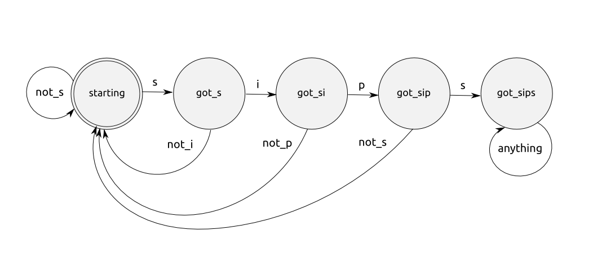

<section>
  <h1>Finite State Machines</h1>
  <h2>GenFSM</h2>
  <ul>
    <li class='fragment'>What a Finite State Machine (FSM) is</li>
    <li class='fragment'>An example FSM that we'll be implementing</li>
    <li class='fragment'>How to implement an FSM using GenFSM</li>
  </ul>
  <aside class='notes'>
    <p>Alright, so now we&#39;re going to look at implementing Finite State Machines with
    OTP using GenFSM.  We&#39;ll quickly cover: [advance]</p>
    
    <p>What a Finite State Machine (FSM) is [advance]</p>
    
    <p>An example FSM that we&#39;ll be implementing [advance]</p>
    
    <p>How to implement an FSM using GenFSM.  Let&#39;s get started. [advance]</p>
  </aside>
</section>
<section>
  <h1>Finite State Machines</h1>
  <h2>What they are</h2>
  <pre><code>defmodule Something do&#x000A;  use GenFSM.Behaviour&#x000A;end</code></pre>
  <p>A means of modelling some computation.</p>
  <ul>
    <li class='fragment'>It can be in one of a limited number of states;</li>
    <li class='fragment'>It has an initial state;</li>
    <li class='fragment'>It can transition from one state to another based on some event or condition.</li>
  </ul>
  <aside class='notes'>
    <p>A Finite State Machine is a means of modelling some computation: [advance]</p>
    
    <ul>
    <li>It can be in one of a limited number of states; [advance]</li>
    <li>It has an initial state; [advance]</li>
    <li>It can transition from one state to another based on some event or condition.</li>
    </ul>
    
    <p>They can be used to solve a wide range of problems, and often they make
    thinking about the problem more clear than it would be with other available
    solutions.  For example, I&#39;ve used FSMs in the past to help less experienced
    developers change a black box, scary-looking regular expression from doom into a
    tight, meaningful class in which the error in their logic became glaringly
    obvious.</p>
    
    <p>I&#39;ve also used them to model a financial transaction in a customer system, where there
    were multiple external systems that had to be updated in response to a charge being created
    in our system, and it had to happen in very specifically ordered ways, with logic that
    could handle various potential error cases.</p>
  </aside>
</section>
<section>
  <h1>Finite State Machines</h1>
  <h2>Our example FSM</h2>
  <div class='fragment'>
    <p></p>
  </div>
  <aside class='notes'>
    <p>It&#39;s always good to have a problem domain, so we&#39;re going to build a Finite
    State Machine to match some input and see if it contains the string &#39;sips&#39;
    anywhere in it.  Let&#39;s see what that machine would look like: [advance]</p>
    
    <p>This is known as an acceptor state machine.  We&#39;ll consider a given machine as
    &#39;successful&#39; if it ends up in the <code>got_sips</code> state, and anything else we
    consider unsuccessful.  If it&#39;s fed the string &#39;sips&#39; at any point, it falls
    into the <code>got_sips</code> state, and can&#39;t get out.</p>
    
    <p>It starts out in <code>starting</code> and proceeds if it is passed an <code>s</code> as input.  Any
    other input from that state will just transition it into the <code>starting</code> state
    again.  An <code>s</code> takes it to the <code>got_s</code> state.</p>
    
    <p>From <code>got_s</code>, anything but an <code>i</code> will transition it back to the <code>starting</code>
    state.  An <code>i</code> will make it proceed to the <code>got_si</code> state.</p>
    
    <p>This repeats for <code>p</code>.</p>
    
    <p>Finally, from <code>got_sip</code>, if another <code>s</code> is received it proceeds to the
    <code>got_sips</code> state.  At that point, any other input doesn&#39;t affect the state of
    the machine.</p>
    
    <p>Anyway, let&#39;s go forward with the FSM implementation.</p>
  </aside>
</section>
<section>
  <h1>LIVE LIVE LIVE LIVE LIVE</h1>
  <h1>CODING CODING CODING</h1>
  <h1>ZOMG ZOMG ZOMG ZOMG</h1>
  <aside class='notes'>
    <p>Now that we&#39;ve got the theory and the domain for our project out of the way,
    let&#39;s go ahead and start implementing.  Make a new project:</p>
    
    <pre><code>mix new gen_fsm_playground &amp;&amp; cd gen_fsm_playground&#x000A;</code></pre>
    
    <p>Now open up a new test file, <code>test/sips_matcher_test.exs</code> and add the following:</p>
    
    <pre><code>defmodule SipsMatcherTest do&#x000A;  use ExUnit.Case&#x000A;&#x000A;  test &quot;[:starting] it successfully consumes the string &#39;s&#39;&quot; do&#x000A;    fsm = SipsMatcher.start_link&#x000A;    assert SipsMatcher.consume_s(fsm) == :got_s&#x000A;  end&#x000A;&#x000A;  test &quot;[:starting] it successfully consumes strings other than &#39;s&#39;&quot; do&#x000A;    fsm = SipsMatcher.start_link&#x000A;    assert SipsMatcher.consume_not_s(fsm) == :starting&#x000A;  end&#x000A;end&#x000A;</code></pre>
    
    <p>Here we&#39;re just defining the beginnings of our <code>SipsMatcher</code> GenFSM.  We expect
    our public api to consist of <code>start_link/0</code>, <code>consume_s/1</code>, and
    <code>consume_not_s/1</code> at the very least.  If we were to run the tests now, we know
    they would fail as there&#39;s no <code>SipsMatcher</code> module, so let&#39;s go ahead and define
    that module at the top of the file.</p>
  </aside>
</section>
<section>
  <h1>LIVE CODING ZOMG</h1>
  <p></p>
  <aside class='notes'>
    <p>Here...</p>
    
    <pre><code>defmodule SipsMatcher do&#x000A;  use GenFSM.Behaviour&#x000A;&#x000A;  # Public API&#x000A;  def start_link do&#x000A;    {:ok, fsm} = :gen_fsm.start_link(__MODULE__, [], [])&#x000A;    fsm&#x000A;  end&#x000A;&#x000A;  def consume_s(fsm) do&#x000A;    :gen_fsm.sync_send_event(fsm, :s)&#x000A;  end&#x000A;&#x000A;  def consume_not_s(fsm) do&#x000A;    :gen_fsm.sync_send_event(fsm, :not_s)&#x000A;  end&#x000A;end&#x000A;</code></pre>
    
    <p>Now, this is a little bit to take in.  First, we make ourselves a nice
    <code>start_link</code> function that hides some of the <code>gen_fsm</code> interface from our
    consumers.  Next, we define a couple of functions for consuming <code>s</code> and <code>not_s</code>.
    Here, we&#39;re using the <code>gen_fsm</code> <code>sync_send_event/2</code> interface.  Generally, you
    want to use async here (just <code>send_event/2</code>).  However, it&#39;s a bit harder to
    test async things, so for the sake of demonstration and testability we&#39;ll make
    this synchronous.  You can look into the docs to find an async example.  No
    one&#39;s really documented this synchronous-style example anywhere as far as I
    could find.</p>
  </aside>
</section>
<section>
  <h1>LIVE CODING ZOMG</h1>
  <p></p>
  <aside class='notes'>
    <p>Anyway, this won&#39;t work yet because we aren&#39;t supporting the GenFSM expected
    behaviours yet.  Let&#39;s see what that looks like:</p>
    
    <pre><code># GenFSM API&#x000A;def init(_) do&#x000A;  { :ok, :starting, [] }&#x000A;end&#x000A;&#x000A;def starting(:s, _from, state_data) do&#x000A;  { :reply, :got_s, :got_s, state_data }&#x000A;end&#x000A;def starting(:not_s, _from, state_data) do&#x000A;  { :reply, :starting, :starting, state_data }&#x000A;end&#x000A;</code></pre>
    
    <p>Here we&#39;re defining an <code>init/1</code> function, which is called when the FSM is
    initialized, and then we&#39;re defining two functions for handling different
    transitions out of the <code>starting</code> state.  In those transitions, we&#39;re replying
    to the caller with the next state, then specifying the next state and passing on
    our (unused, really) <code>state_data</code>.  You can find the full range of return values
    that GenFSM knows how to deal with in the docs for GenFSM.Behaviour.</p>
    
    <p>The return values for these functions are replies - they consist of a tuple
    containing the atom <code>:reply</code>, the reply to send, the new state that the FSM should
    be in next, and the state data (which we aren&#39;t really making use of here)</p>
    
    <p>Also, it&#39;s worth noting that the state machine responds to inbound messages by
    invoking a function with the same name as the state machine&#39;s current state - this
    is how we&#39;re describing the &#39;arrows out of the state&#39; in the diagram.</p>
    
    <p>Let&#39;s go ahead and run our tests, and they should be passing.</p>
    
    <p>In the interest of time, I&#39;m only going to follow up with two more tests - one
    for success, and one for failure.  Let&#39;s see what that looks like:</p>
  </aside>
</section>
<section>
  <h1>LIVE CODING ZOMG</h1>
  <p></p>
  <aside class='notes'>
    <pre><code>test &quot;it successfully consumes the string &#39;sips&#39;&quot; do&#x000A;  fsm = SipsMatcher.start_link&#x000A;  SipsMatcher.consume_s(fsm)&#x000A;  SipsMatcher.consume_i(fsm)&#x000A;  SipsMatcher.consume_p(fsm)&#x000A;  assert SipsMatcher.consume_s(fsm) == :got_sips&#x000A;end&#x000A;&#x000A;test &quot;it successfully consumes strings without a match&quot; do&#x000A;  fsm = SipsMatcher.start_link&#x000A;  SipsMatcher.consume_s(fsm)&#x000A;  SipsMatcher.consume_i(fsm)&#x000A;  SipsMatcher.consume_p(fsm)&#x000A;  assert SipsMatcher.consume_not_s(fsm) == :starting&#x000A;end&#x000A;</code></pre>
    
    <p>If you go ahead and run the tests, they fail because we don&#39;t have <code>consume_i</code>
    functions, etc.  Let&#39;s define those and their corresponding state machine
    handling functions for the GenFSM.Behaviour:</p>
  </aside>
</section>
<section>
  <h1>LIVE CODING ZOMG</h1>
  <p></p>
  <aside class='notes'>
    <p>Hey...</p>
    
    <pre><code>def consume_i(fsm) do&#x000A;  :gen_fsm.sync_send_event(fsm, :i)&#x000A;end&#x000A;&#x000A;def consume_p(fsm) do&#x000A;  :gen_fsm.sync_send_event(fsm, :p)&#x000A;end&#x000A;&#x000A;def got_s(:i, _from, state_data) do&#x000A;  { :reply, :got_si, :got_si, state_data }&#x000A;end&#x000A;&#x000A;def got_si(:p, _from, state_data) do&#x000A;  { :reply, :got_sip, :got_sip, state_data }&#x000A;end&#x000A;&#x000A;def got_sip(:s, _from, state_data) do&#x000A;  { :reply, :got_sips, :got_sips, state_data }&#x000A;end&#x000A;def got_sip(:not_s, _from, state_data) do&#x000A;  { :reply, :starting, :starting, state_data }&#x000A;end&#x000A;</code></pre>
    
    <p>If you run the tests now, they should pass.  We can also add a test real quick
    to verify that after consuming &#39;sips&#39;, it can successfully consume anything else
    and stay in the successfully accepting state (<code>got_sips</code>).  Let&#39;s see what that
    looks like:</p>
  </aside>
</section>
<section>
  <h1>LIVE CODING ZOMG</h1>
  <p></p>
  <aside class='notes'>
    <p>Hey...</p>
    
    <pre><code>test &quot;it can&#39;t fall out of the `got_sips` state&quot; do&#x000A;  fsm = SipsMatcher.start_link&#x000A;  SipsMatcher.consume_s(fsm)&#x000A;  SipsMatcher.consume_i(fsm)&#x000A;  SipsMatcher.consume_p(fsm)&#x000A;  SipsMatcher.consume_s(fsm)&#x000A;  assert SipsMatcher.consume_i(fsm) == :got_sips&#x000A;end&#x000A;</code></pre>
    
    <p>If you run the tests, it fails because it expects a <code>got_sips</code> function to be
    defined for the GenFSM.Behaviour.  Let&#39;s define that:</p>
    
    <pre><code>def got_sips(_, _from, state_data) do&#x000A;  { :reply, :got_sips, :got_sips, state_data }&#x000A;end&#x000A;</code></pre>
    
    <p>Go ahead and run the tests, and they&#39;ll pass.</p>
  </aside>
</section>
<section>
  <h1>Finite State Machines</h1>
  <h2>Summary</h2>
  <p></p>
  <aside class='notes'>
    <p>It would also be nice to know at what point in the input string the first
    occurrence of <code>sips</code> happened.  I&#39;ll leave that as an exercise for you,
    but the bit about <code>state_data</code> that we aren&#39;t fiddling with should be highly
    interesting :)</p>
    
    <p>If you&#39;re going to do it, I&#39;d suggest tracking the number of characters
    encountered, incrementing it at each step regardless.  Then you&#39;d track the
    first <code>s</code> you ran into in an <code>occurence</code> field, and only update that field (to
    match the <code>number_of_characters</code> field) in the transition from <code>starting</code> to
    <code>got_s</code>.</p>
    
    <p>So pretty quickly, we covered the basics of Finite State Machines, saw how to
    implement one with GenFSM.Behaviour as well as how to put a nicer face on it,
    and drove our implementation with tests.  I also gave you some homework, and if
    you follow through with it I&#39;d love to see what it looks like :)</p>
  </aside>
</section>
